w erze agentów AI
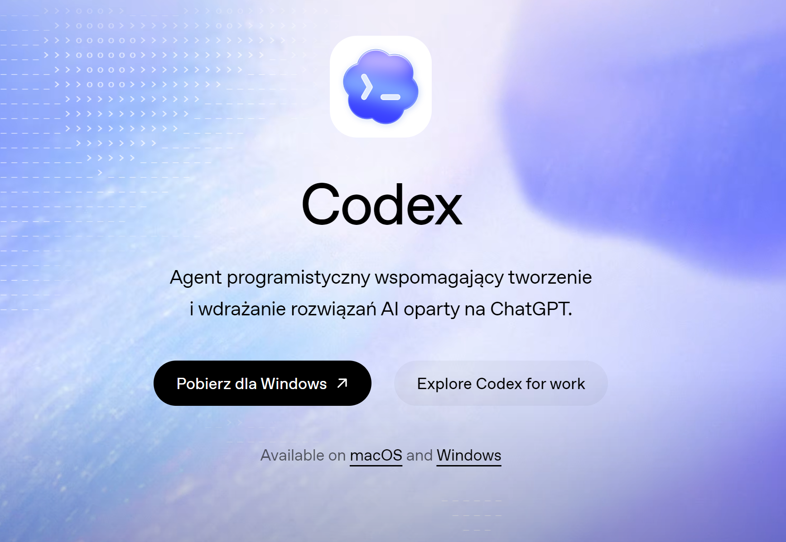
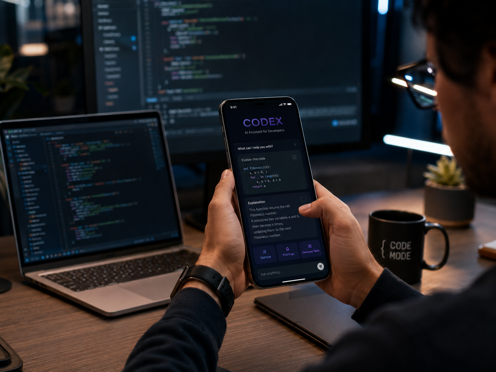
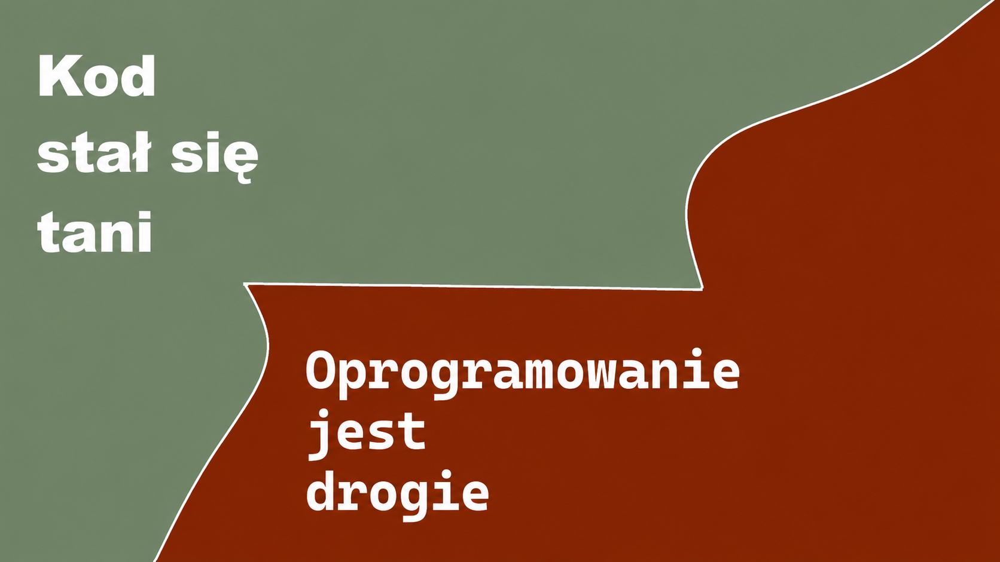
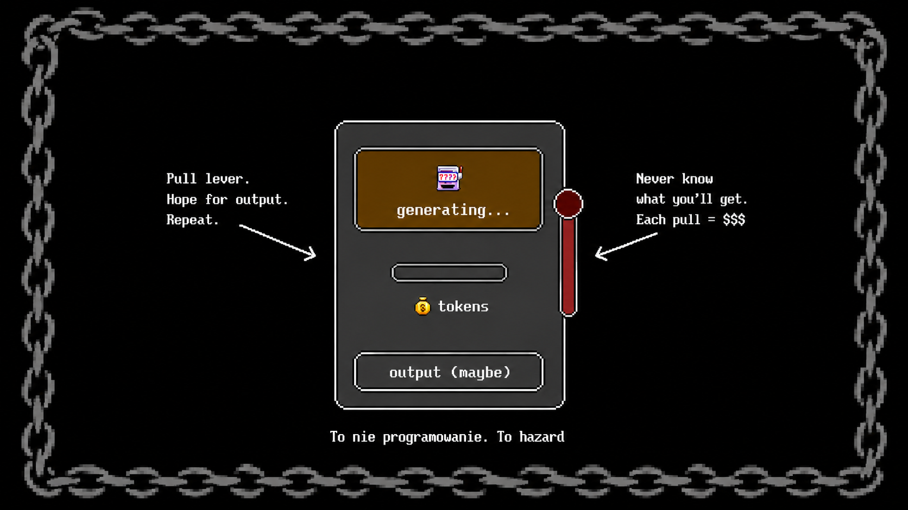
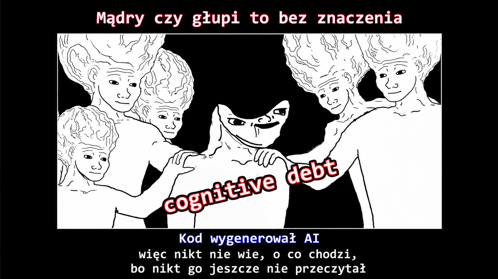
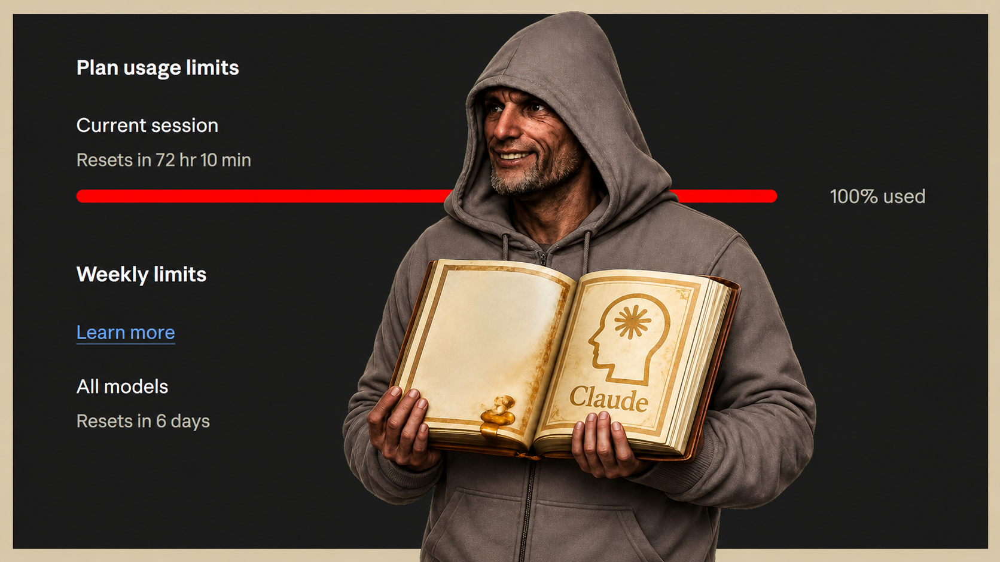
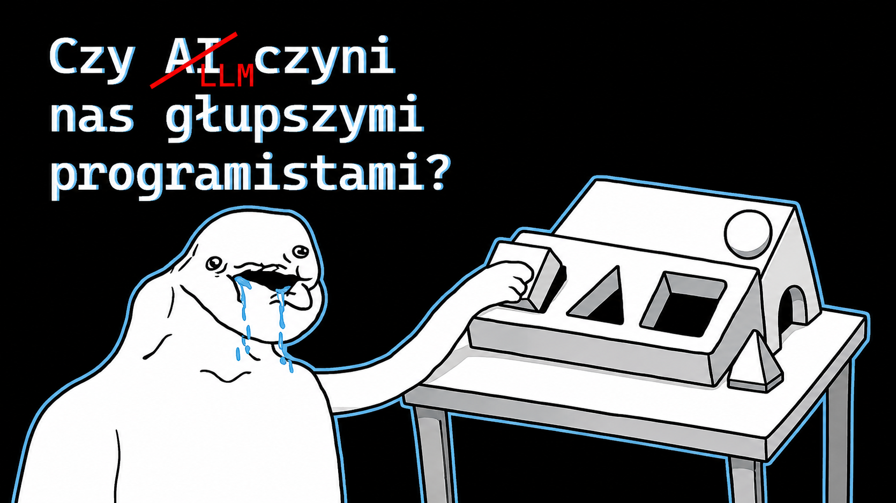
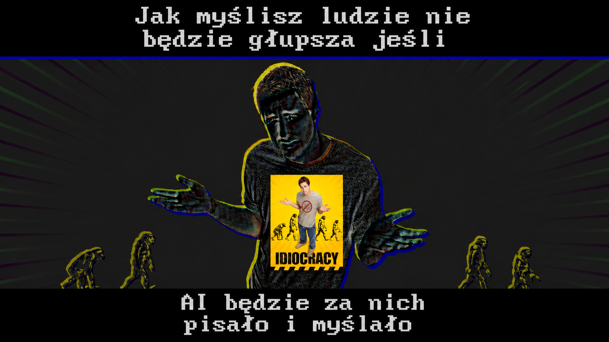
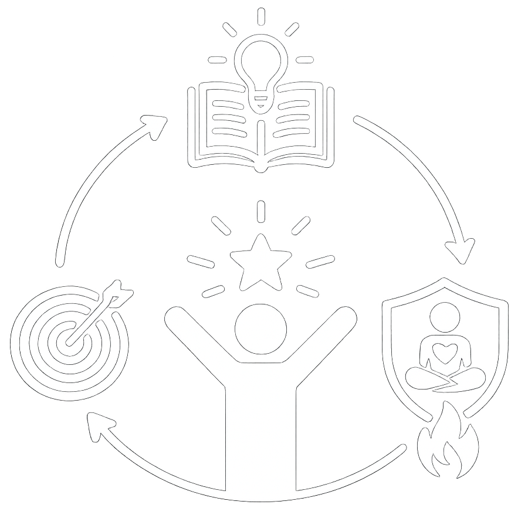
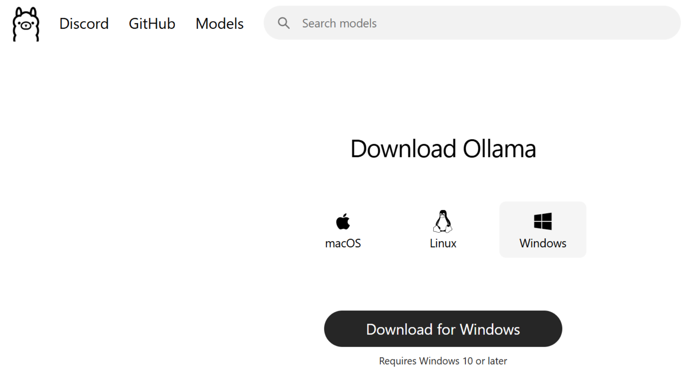
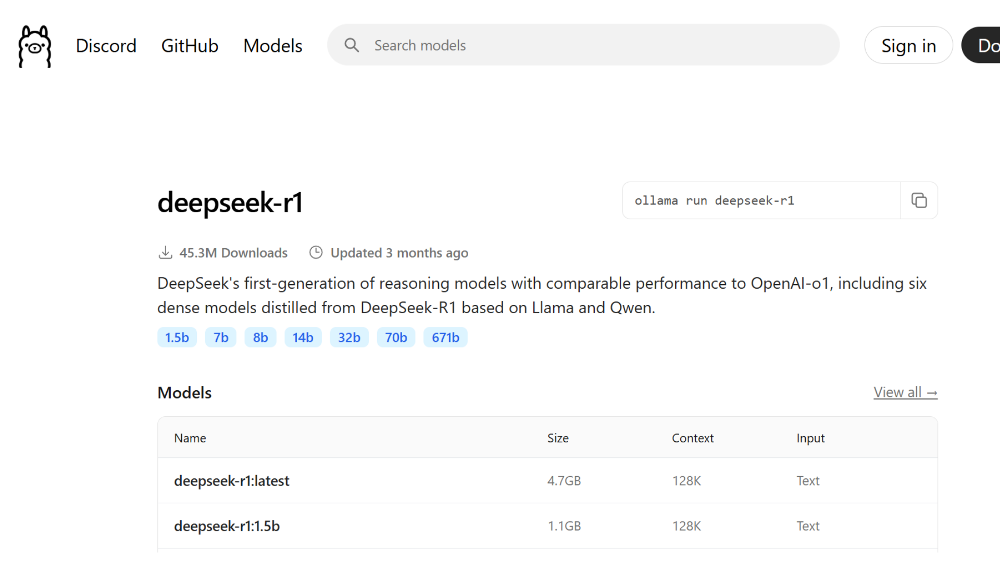
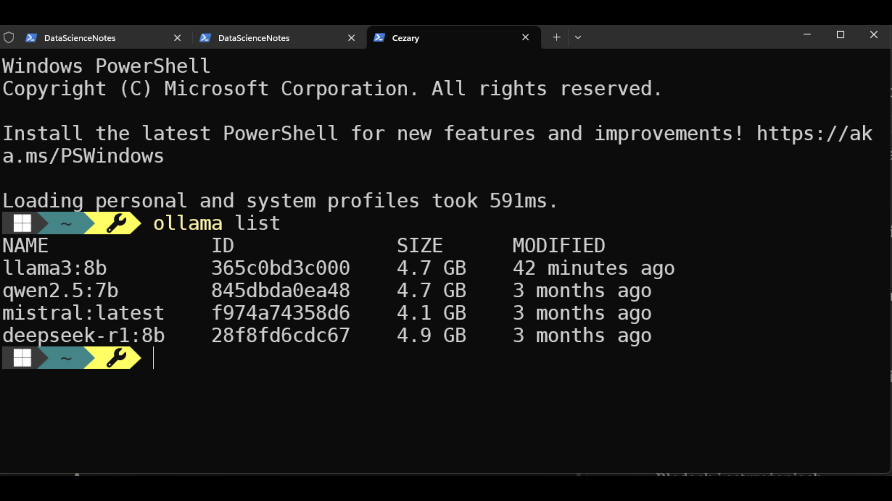
import ollama
# Inicjalizacja klienta ollama z dokładnym adresem
client = ollama.Client(host='http://localhost:11434')
# Wywołanie modelu z przykładowym promptem
response = client.generate(
model="llama3",
prompt="Dlaczego trawa jest zielona?"
)
# Wyświetlenie odpowiedzi
print(response['response'])
using Microsoft.Extensions.AI;
using Microsoft.Extensions.DependencyInjection;
using Microsoft.Extensions.Hosting;
var builder = Host.CreateApplicationBuilder();
builder.Services.AddChatClient
(new OllamaChatClient(new Uri("http://localhost:11434"),
"llama3"));
var app = builder.Build();
var chatClient = app.Services.
GetRequiredService<IChatClient>();
var chatHistory = new List<ChatMessage>();
while (true)
{
Console.WriteLine("Enter your prompt:");
var userPrompt = Console.ReadLine();
chatHistory.Add(new ChatMessage(ChatRole.User, userPrompt));
Console.WriteLine("Response from AI:");
var chatResponse = "";
await foreach (var item in
chatClient.CompleteStreamingAsync(chatHistory))
{
// We're streaming the response,
// so we get each message as it arrives
Console.Write(item.Text);
chatResponse += item.Text;
}
chatHistory.Add(new ChatMessage(ChatRole.Assistant,
chatResponse));
Console.WriteLine();
}
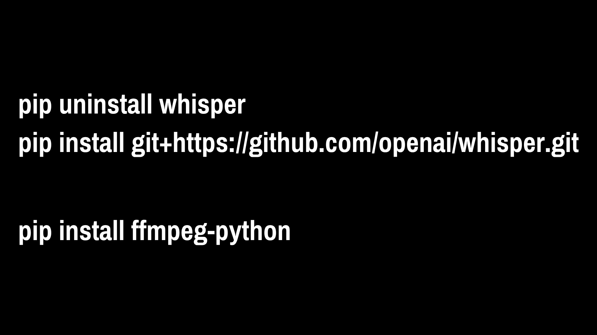
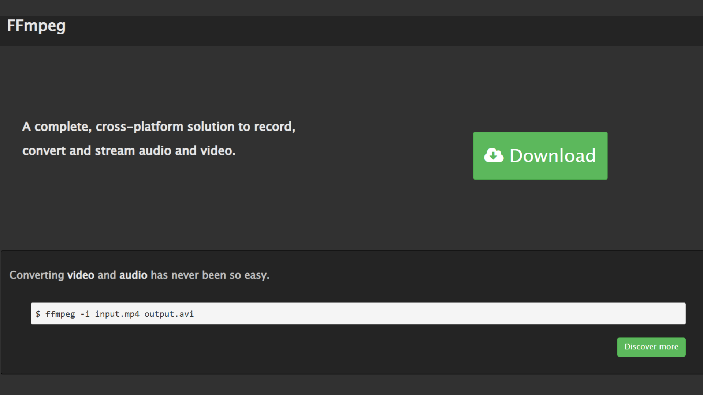
import whisper
def transcribe_video(video_path, output_path):
try:
model = whisper.load_model("base")
result = model.transcribe(video_path)
if not result or "text" not in result:
print("Transkrypcja nie powiodła się.")
return
with open(output_path, "w", encoding="utf-8") as f:
f.write(result["text"])
print("Transkrypcja została zapisana pomyślnie.")
except Exception as e:
print(f"Wystąpił błąd: {e}")
if __name__ == "__main__":
video_path = r"D:\WDI_GRAPHQL.mp4"
output_path = r"D:\WDI_GRAPHQL.txt"
transcribe_video(video_path, output_path)
import whisper
from datetime import timedelta
def format_timestamp(seconds):
td = timedelta(seconds=seconds)
return str(td)[:-3].replace('.', ',')
def transcribe_to_srt(audio_path, srt_path):
model = whisper.load_model("base")
# Możesz użyć "small", "medium" lub "large" dla lepszej dokładności
result = model.transcribe(audio_path)
segments = result['segments']
with open(srt_path, 'w', encoding='utf-8') as srt_file:
for i, segment in enumerate(segments, start=1):
start = format_timestamp(segment['start'])
end = format_timestamp(segment['end'])
text = segment['text'].strip()
srt_file.write(f"{i}\n{start} --> {end}\n{text}\n\n")
# Przykład użycia
transcribe_to_srt(r"D:\WDI_GRAPHQL.mp4",r"D:\WDI_GRAPHQL.SRT")
23
0:00:51,600 --> 0:00:54,440
Po raz na jakiś czas patrzę, co się zmienia w grawkulel
24
0:00:54,440 --> 0:00:56,320
i jeszcze to w kontekście Cisharpa i Dukneta.
25
0:00:56,320 --> 0:00:57,040
Dokładnie.
26
0:00:57,520 --> 0:00:59,320
I tak w ten sposób powstała ta prekcja.
27
0:00:59,320 --> 0:01:02,520
No po, mamy mnóstwo zakręć, mnóstwo sposobów,
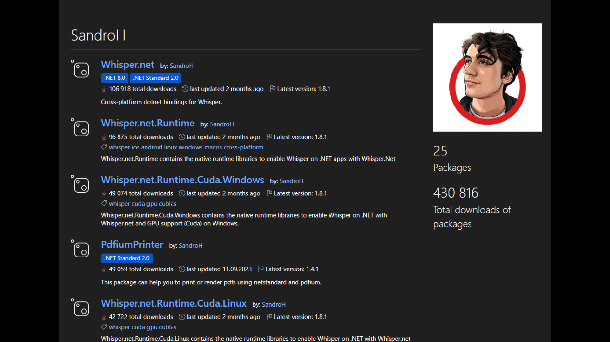
try
{
await transcriber.InitializeAsync("C:\\MyScripts\\whsipermodel\\ggml-base.bin");
// Transcribe MP3 file
string mp3Result = await transcriber.TranscribeAudioFileAsync
("D:\\Cool Kids of death - 009 -piosenki o milosci.mp3");
Console.WriteLine("MP3 MUSIC Transcription:");
Console.WriteLine(mp3Result);
// Transcribe MP3 file
string mp3Result2 = await transcriber.TranscribeAudioFileAsync
(@"D:\Game Boy Advance： Incredible tech on just 2 AA Batteries.mp3");
Console.WriteLine("MP3 Transcription:");
Console.WriteLine(mp3Result2);
// Transcribe video file (audio track will be extracted)
string videoResult = await transcriber.TranscribeAudioFileAsync
("D:\\AQP71Kcw8e.mp4");
Console.WriteLine("\nVideo Transcription:");
Console.WriteLine(videoResult);
}
catch (Exception ex)
{
Console.WriteLine($"Error: {ex.Message}");
}
finally
{
transcriber.Dispose();
}
public class WhisperTranscriber
{
private WhisperFactory whisperFactory;
private WhisperProcessor processor;
public async Task InitializeAsync(string modelPath = null)
{
// If no model path provided, download and use a default model
if (string.IsNullOrEmpty(modelPath))
{
modelPath = await DownloadModelAsync();
}
// Verify model file exists
if (!File.Exists(modelPath))
{
throw new FileNotFoundException($"Whisper model file not found: {modelPath}");
}
// Create Whisper factory and processor
whisperFactory = WhisperFactory.FromPath(modelPath);
processor = whisperFactory.CreateBuilder()
.WithLanguage("auto")
.Build();
}
public async Task<string> TranscribeAudioFileAsync(string inputFilePath)
{
try
{
string wavFilePath = null;
if (FFmpegConvertToWave.IsFFmpegAvailable() == true)
{
wavFilePath = NAudioConvertToWave.ConvertToWav(inputFilePath);
}
else
{
// Convert to 16kHz mono WAV using FFmpeg
wavFilePath = await FFmpegConvertToWave.ConvertToWhisperFormatAsync(inputFilePath);
}
// Transcribe audio
var fullTranscription = "";
using (var fileStream = File.OpenRead(wavFilePath))
{
await foreach (var segment in processor.ProcessAsync(fileStream))
{
Console.WriteLine($"[{segment.Start:hh\\:mm\\:ss} -> {segment.End:hh\\:mm\\:ss}] {segment.Text}");
fullTranscription += segment.Text + " ";
}
}
// Clean up temporary file if it was created
if (wavFilePath != inputFilePath && File.Exists(wavFilePath))
{
File.Delete(wavFilePath);
}
return fullTranscription.Trim();
}
catch (Exception ex)
{
throw new Exception($"Error transcribing audio: {ex.Message}", ex);
}
}
private async Task<string> DownloadModelAsync()
{
var modelDir = Path.Combine(Environment.GetFolderPath(Environment.SpecialFolder.ApplicationData), "WhisperModels");
Directory.CreateDirectory(modelDir);
var modelPath = Path.Combine(modelDir, "ggml-base.bin");
if (!File.Exists(modelPath))
{
Console.WriteLine("Downloading Whisper base model...");
using var client = new HttpClient();
var url = "https://huggingface.co/ggerganov/whisper.cpp/resolve/main/ggml-base.bin";
try
{
var response = await client.GetAsync(url);
response.EnsureSuccessStatusCode();
await using var fileStream = File.Create(modelPath);
await response.Content.CopyToAsync(fileStream);
Console.WriteLine($"Model downloaded to: {modelPath}");
}
catch (Exception ex)
{
throw new Exception($"Failed to download model: {ex.Message}");
}
}
return modelPath;
}
public void Dispose()
{
processor?.Dispose();
whisperFactory?.Dispose();
}
}
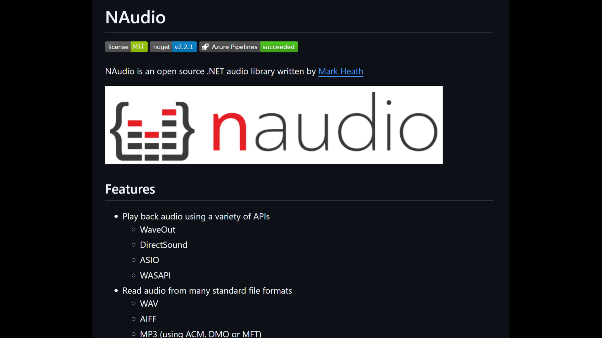
using NAudio.Wave;
using NAudio.Wave.SampleProviders;
namespace ConsoleAppWhispernet;
public static class NAudioConvertToWave
{
public static string ConvertToWav(string inputFilePath)
{
var extension = Path.GetExtension(inputFilePath).ToLower();
var outputPath = Path.ChangeExtension(inputFilePath, "_16khz.wav");
try
{
using (var reader = CreateAudioReader(inputFilePath, extension))
{
var sampleProvider = ConvertTo16KhzMono
(reader, out IDisposable resamplerToDispose);
using (resamplerToDispose)
{
var waveProvider = new SampleToWaveProvider16(sampleProvider);
WaveFileWriter.CreateWaveFile(outputPath, waveProvider);
}
}
return outputPath;
}
catch (Exception ex)
{
throw new Exception($"Error converting {inputFilePath} to 16kHz WAV: {ex.Message}", ex);
}
}
private static AudioFileReader CreateAudioReader
(string inputFilePath, string extension)
{
if (extension == ".mp3" || extension == ".wav")
{
return new AudioFileReader(inputFilePath);
}
else
{
// Convert unsupported formats using MediaFoundationReader to a WAV file in memory
var tempReader = new MediaFoundationReader(inputFilePath);
var tempWavPath = Path.GetTempFileName();
WaveFileWriter.CreateWaveFile(tempWavPath, tempReader);
tempReader.Dispose();
return new AudioFileReader(tempWavPath);
}
}
private static ISampleProvider ConvertTo16KhzMono
(AudioFileReader reader, out IDisposable resamplerToDispose)
{
// First, convert to mono if needed
ISampleProvider monoProvider;
if (reader.WaveFormat.Channels == 1)
{
monoProvider = reader; // Already mono
}
else
{
monoProvider = new StereoToMonoSampleProvider(reader);
}
// Then, resample to 16000 Hz if needed
if (reader.WaveFormat.SampleRate != 16000)
{
var resampler = new WdlResamplingSampleProvider(monoProvider, 16000);
resamplerToDispose = reader; // Dispose reader at the end
return resampler;
}
// No resampling needed
resamplerToDispose = reader; // Still need to dispose the reader
return monoProvider;
}
}
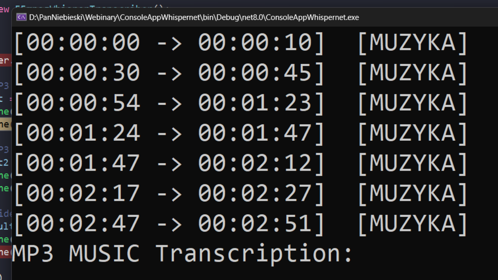
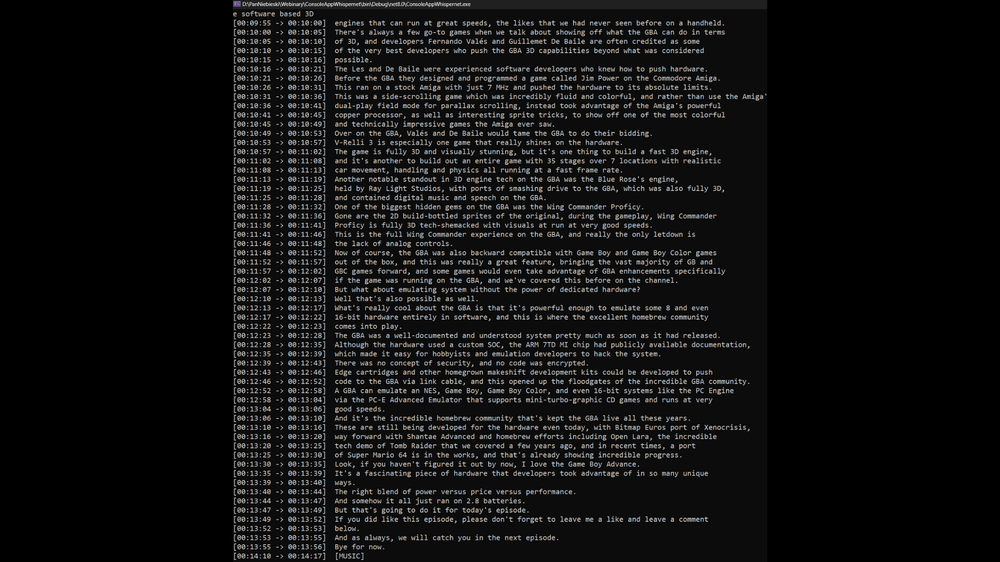
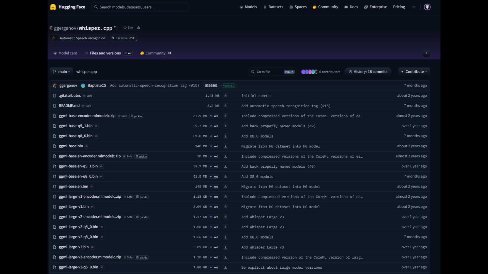
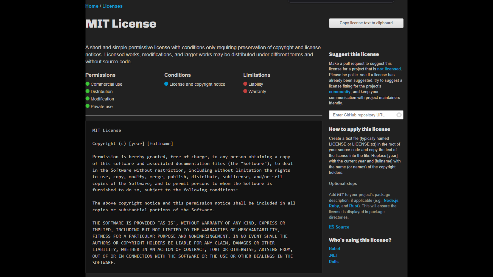
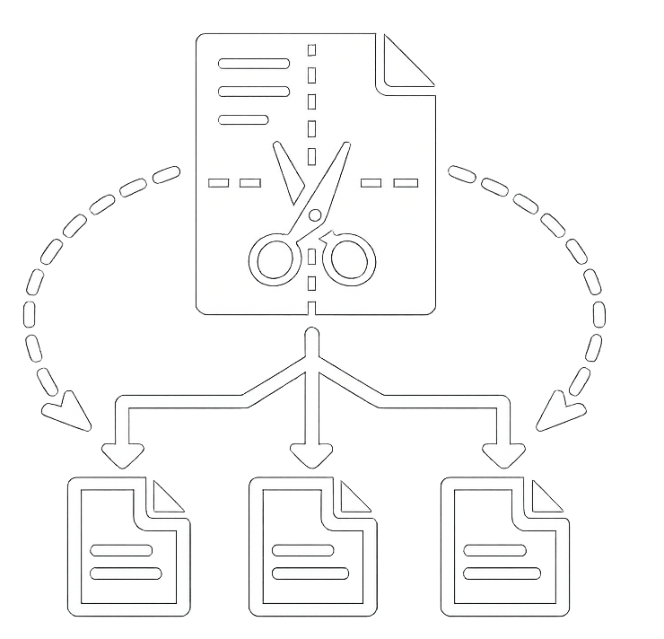
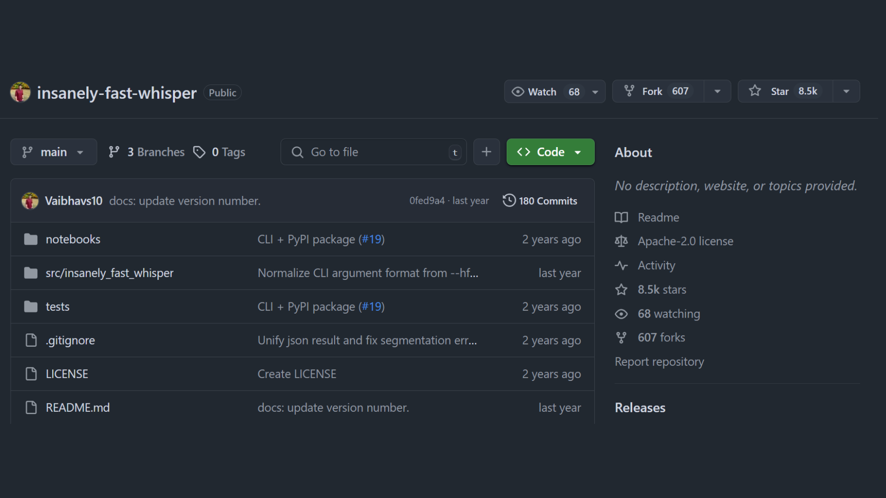
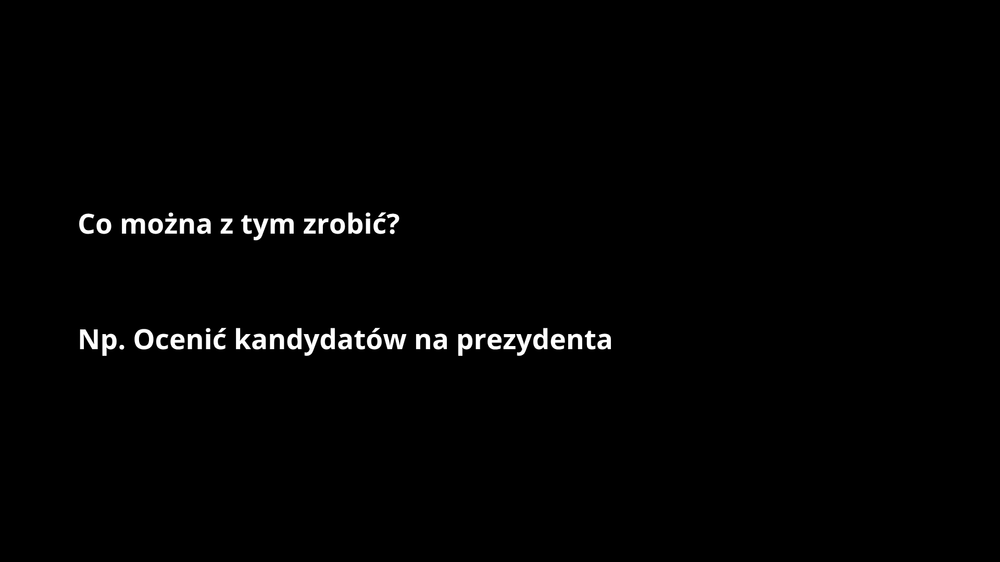
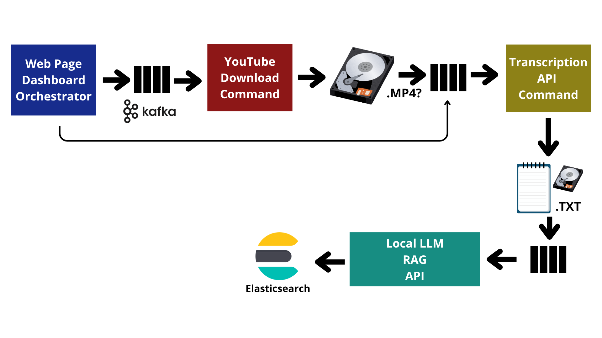
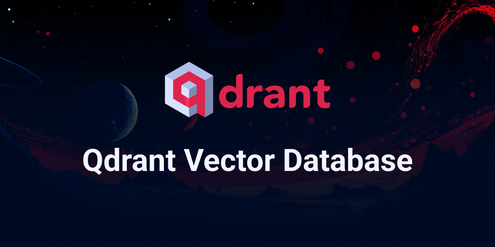
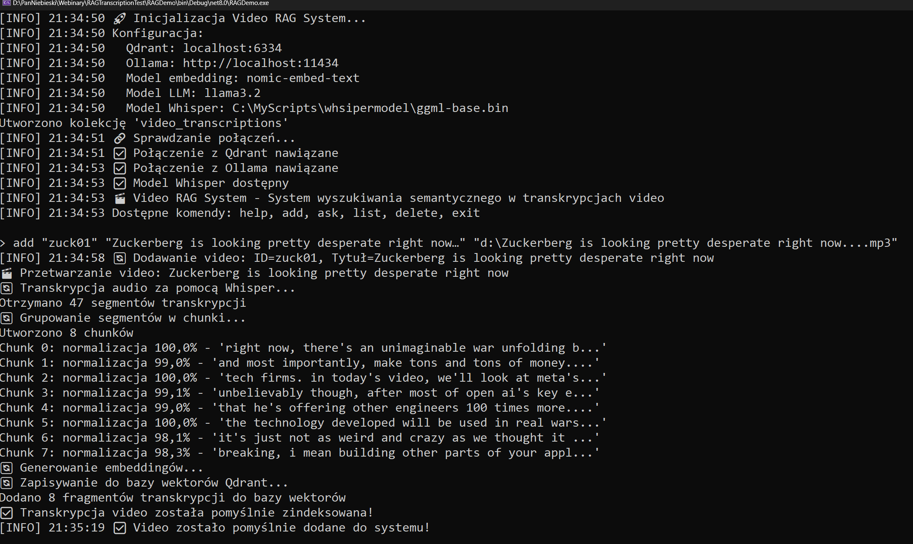
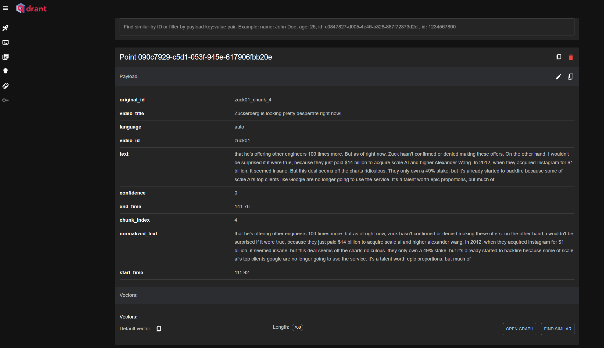
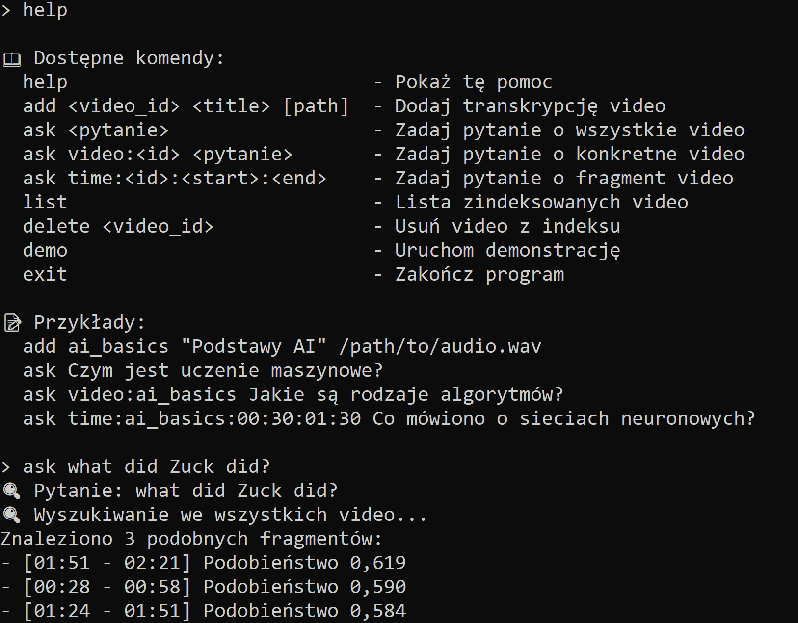
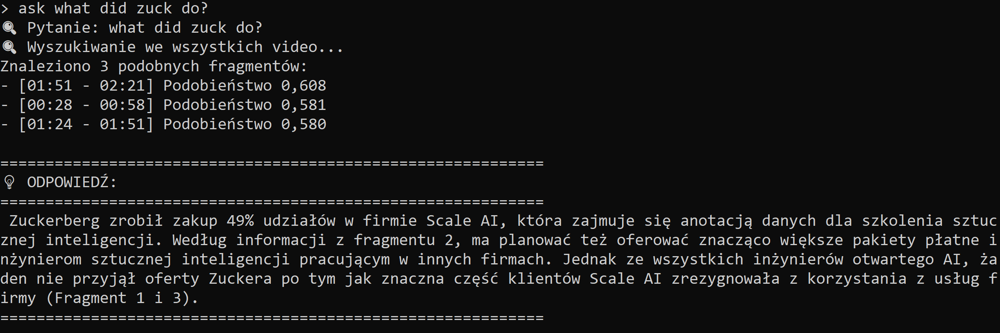
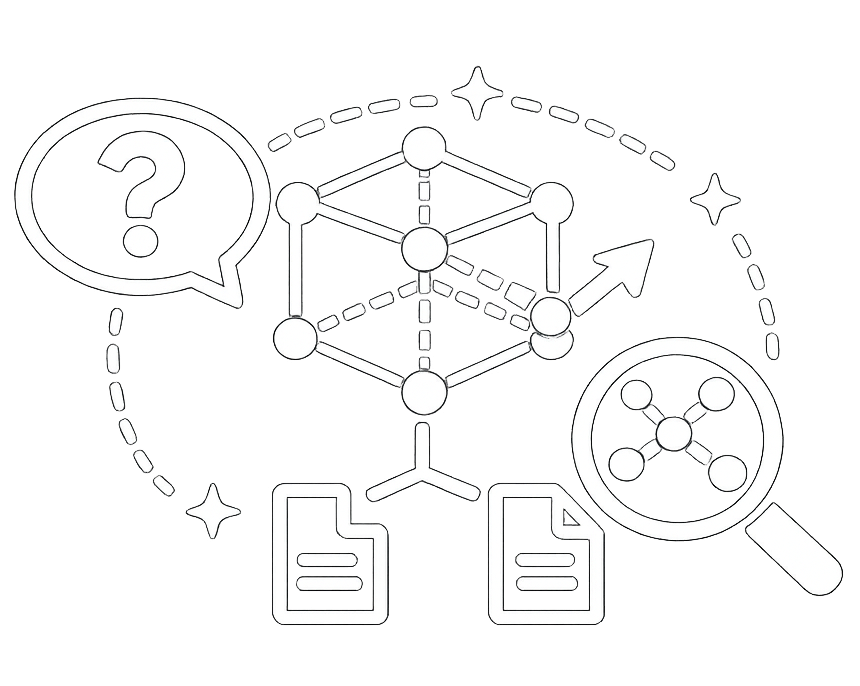
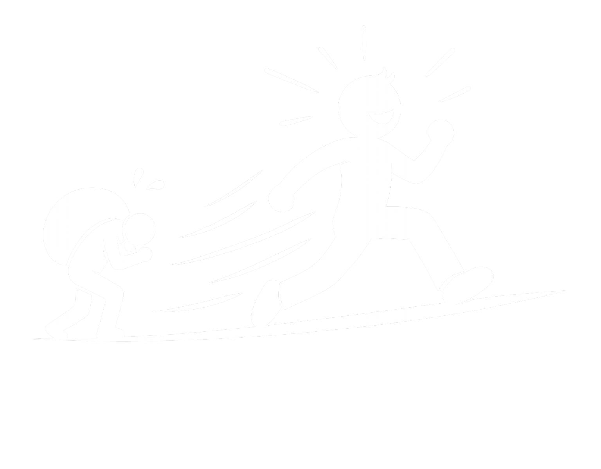